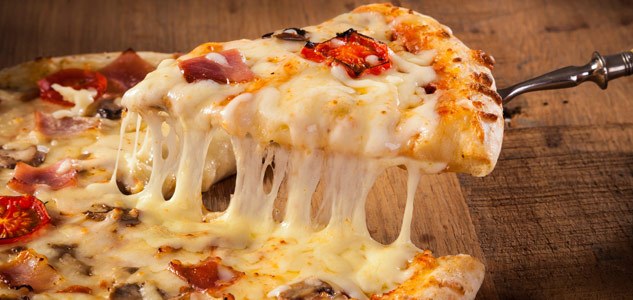

¿Quienes somos?
¡Bienvenido a nuestra página web! Somos Rotisería Eldi Elaboración Propia, una empresa que se dedica con suma meticulosidad a la preparación de pastas, viandas y pizzas, etc.
En nuestra rotisería contamos con un grupo de cocineros que sienten un profundo amor por el arte culinario, esta circunstancia nos permite entregarle una gran variedad de platos con exquisito sabor.